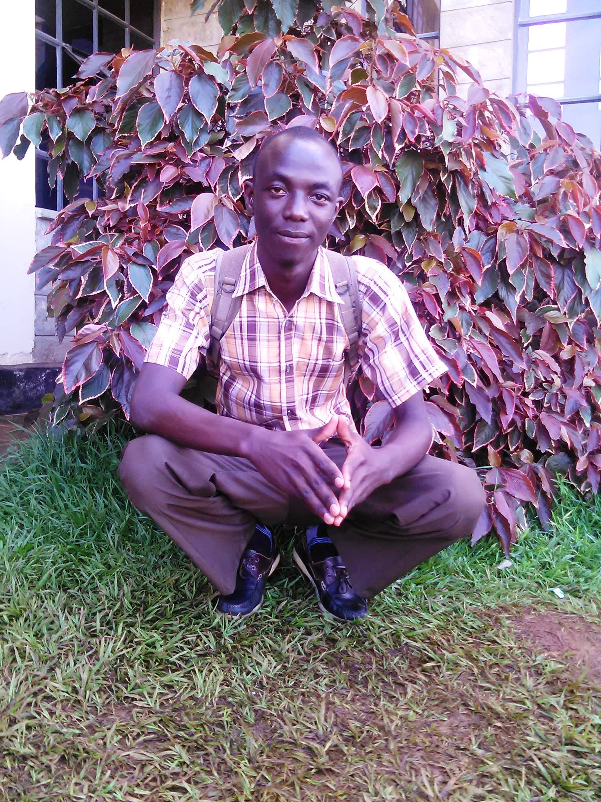

About Me
 My name is Stephen. Most of my friends call me Stevo. I was born in Kenya. I am currently working as a cashier. I love riding, hiking and travelling.
Kenya
Kenya, situated in East Africa, is a vibrant nation characterized by its rich cultural tapestry, stunning natural landscapes, and dynamic economic potential. With a diverse population comprising various ethnic groups, languages, and traditions, Kenya boasts a colorful mosaic of heritage and identity. Its abundant wildlife, including the famed Big Five, draws tourists from around the globe to its renowned national parks and reserves such as the Maasai Mara and Amboseli. Economically, Kenya is a regional powerhouse, with Nairobi serving as a bustling hub of commerce, innovation, and entrepreneurship. The country's agricultural sector, tourism industry, and burgeoning technology scene contribute significantly to its growing economy. However, Kenya also faces challenges such as poverty, inequality, and environmental degradation, which necessitate ongoing efforts towards sustainable development and inclusive growth. Despite these challenges, Kenya's resilience, creativity, and spirit of community continue to propel it forward on its journey towards a brighter future.
Web development Resources
Certainly! Here are five web development resources suitable for students: